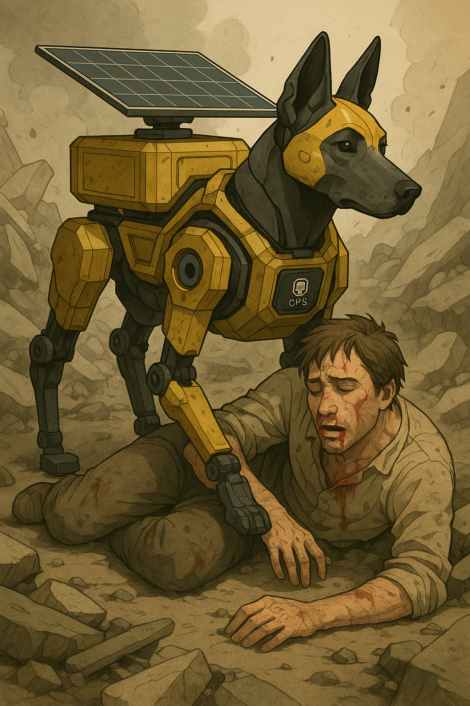

로봇개 ‘스팟’, 구조 현장에서 활약
2025년 5월 27일 · 구조 기술
Boston Dynamics의 로봇개 ‘스팟(Spot)’이 재난 구조 현장에서 본격적으로 투입되어 생존자 탐색과 구조 지원에 활약하고 있습니다. 스팟은 강한 기동성과 유연한 움직임을 바탕으로 무너진 건물이나 접근이 어려운 구조물 내부까지 침투할 수 있습니다.
특히 AI 기반 자율주행 시스템이 탑재되어 있어 구조대원들이 원격으로 조작하거나, 사전에 입력된 경로에 따라 자동으로 수색을 수행할 수 있습니다. 열화상 카메라와 환경 센서를 통해 인체 온도, 이산화탄소 농도 등을 감지해 생존자를 파악하고 구조 요청을 전송합니다.
한 구조 전문가는 “사람이 들어가기엔 너무 위험한 공간에서도 스팟은 안전하게 탐색할 수 있다”며 “구조 효율성은 물론 구조대원들의 생명 보호에도 큰 도움이 된다”고 평가했습니다. 향후 스팟의 기술은 산악 구조, 화재 현장 등 다양한 재난 상황으로 확대 적용될 전망입니다.